1 Summary
In this project I trained a small neural network on my laptop's CPU to move points from a 2D Gaussian into a target shape, first a ring (Part 1) and then a torii gate that I designed myself (Part 2). The network never predicts where a point should end up. It only predicts a velocity (vx, vy) at a position and time, and new points are made by following that velocity with Euler steps. The learned paths are not the straight lines the model was trained on: among 30 paths only 1 pair crosses, against 101 for the training lines. For the torii, the histogram distance to the target drops from 0.991 with 1 Euler step to 0.241 with 50 steps and then stays at about 0.23, while the sampling time keeps growing in a straight line with the number of steps. The 0.102 that is left above the noise floor at 1000 steps comes from the learned field, not from the solver, and a bigger network removes about 62% of it.
2 Setup and reproducibility
Everything ran on the CPU of my laptop with 2 threads, the same thread count as the instructor's pilot. I didn't use the GPU, because the assignment is designed for the CPU and those are the timings I want to report. Every timing below was measured with the laptop plugged in and the power profile set to performance. The code (two notebooks, utils.py, saved checkpoints and a README) is in my Blackboard submission and is not public.
| CPU | 11th Gen Intel(R) Core(TM) i7-11800H @ 2.30GHz, 16 logical cores, 2 PyTorch threads used |
|---|---|
| Device | cpu only (CUDA available: no), power: AC, profile: performance |
| OS | Ubuntu 26.04.1 LTS, kernel 7.0.0-42-generic, x86_64 |
| Versions | Python 3.12.15, PyTorch 2.15.0+cpu, NumPy 2.5.4, Matplotlib 3.11.2 |
Model. A multi-layer perceptron (a stack of fully connected layers) that maps (x, y, t) to (vx, vy): 3 → 128 → 128 → 128 → 2, SiLU, with three hidden layers of 128 units. That is exactly 33,794 parameters, the same size as the instructor's model. SiLU is the smooth activation z·sigmoid(z). I picked it because a smooth network gives a smooth velocity field, so the sampled paths don't get sharp kinks. Time goes in as a plain number between 0 and 1, with no time embedding.
Training. Adam with learning rate 10−3, decayed to 10−5 with a cosine schedule, batch size 256, 20,000 steps for the ring and 60,000 for the torii. Every step draws fresh noise, fresh target points and fresh times, so the model never sees the same example twice. Checkpoints are saved, so changing colors, plots or step counts never needs retraining.
| Use | Seed |
|---|---|
| Training (Part 1 / Part 2) | 0 / 0 (robustness reruns: 1, 2) |
| Figure noise (snapshots, quiver underlay, sweep paths) | 100 |
| Evaluation noise for TV and the sweep | 200 (Part 1); 200–204 (Part 2, 5 repeats) |
| Reference target samples | 300 (Part 1); 300–304 (Part 2) |
| Second target sample for the noise floor | 400 (Part 1); 400–404 (Part 2) |
| Animation particles | 500 |
| Interpolation-path pairs and crossing count | 600 |
| Path straightness particles | 101 |
| Job | Time | Notes |
|---|---|---|
| Train ring, 20,000 steps | 20.0 s | 998 steps/s |
| Train torii, 30,000 steps | 35.2 s | 852 steps/s |
| Train torii, 60,000 steps (main model) | 69.6 s | 862 steps/s |
| Train torii, seeds 1 and 2 (robustness) | 66.0 s, 66.8 s | 60,000 steps each |
| Train 4×256 model (capacity check) | 156.5 s | 198,914 parameters, 383 steps/s |
| Sample 10,000 torii points, N = 120 | 494 ms | median of 7 runs, 4.12 ms per network evaluation |
| Sample the 6,000 animation particles, N = 120 | 0.28 s | median of 7 runs |
| Render the main GIF / MP4 | 33.8 s / 22.2 s | 165 frames each |
| Render the ripple GIF | 32.1 s | optional extra |
| Whole Part 2 notebook from checkpoints | 419 s | Task 3 alone: 268 s |
Comparison with the instructor's pilot. The assignment says the instructor's 33,794-parameter model trained for 30,000 steps in about 22 s on 2 threads of an ARM CPU. My torii model took 35.2 s for 30,000 steps on 2 threads of an Intel CPU, so it's in the same range. Mine is a bit slower per step partly because my target is sampled by rejection at every step (about 4 proposals and five polygon tests for every point it keeps). Like the assignment says, rendering the animation takes much longer than running the model: 33.8 s to render the GIF against 0.28 s to sample its particles.
3 Background
Flow matching trains a network to be a velocity field that moves noise into data. I use the convention from the assignment that t = 0 is noise and t = 1 is data. For training, a noise point x0 and a data point x1 are paired at random, a time t is drawn uniformly between 0 and 1, and the network is asked to output the velocity of the straight line between them at the point xt:
To make new points, I start from fresh noise and follow the learned field with forward Euler steps, which means looking up the velocity at the current point, taking a small step in that direction and repeating:
Each step is one network call, so the number of function evaluations (NFE) is just N. This straight-line path is the optimal-transport conditional path of Lipman et al. [1] with σmin = 0, and the same objective as rectified flow [2].
The important idea is what the network can actually learn. The same input (x, t) shows up in many training pairs that want different velocities, but the network can only give one answer. Under a squared loss the best single answer is the average, the conditional mean
which the Flow Matching Guide [3] (eq. 4.10 and §4.5) shows is the minimizer of this loss and the velocity that actually carries the noise distribution to the data distribution. Two things follow from this. First, the loss can't go to zero, because even a perfect network still pays for the spread of the training velocities around their average. Second, the learned paths are not the training lines. The learned flow is an ordinary differential equation (ODE), and ODE solutions are unique, so two particles can never be at the same place at the same time. This is why Liu et al. [2] say flows "avoid crossing", while the random training lines cross all the time.
4 Part 1, Task 1: source, target and training pairs
The source is a standard 2D Gaussian, x0 ∼ N(0, I). This means the x and y coordinates are each drawn from a normal distribution with mean 0 and standard deviation 1, independently. Almost all of these points land within about ±3 of the origin.
For the target I picked a filled ring, an annulus with inner radius 0.6 and outer radius 1.0. To sample a point I draw an angle θ uniformly in [0, 2π) and a radius r = √U with U ∼ Uniform(0.36, 1.0), and the point is (r cos θ, r sin θ). The square root is important. If I drew r uniformly, the points would crowd near the inner edge, because the inner circle is shorter than the outer one but would get the same number of points. With the square root the points are spread evenly per unit area, which is what "area-uniform" means. Every target coordinate is inside ±1.0, and I plot the ring at ±1.2. I chose the ring because it's simple but still makes the model do something real: the Gaussian has most of its mass right in the middle, which is exactly where the ring has its hole.
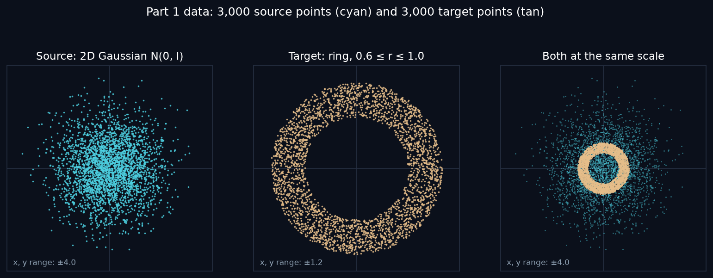
To make one training example I take a random Gaussian point x0 and a random ring point x1, paired completely at random, draw t uniformly between 0 and 1, and build xt and u from the equations in Section 3. xt is the point a fraction t of the way along the straight line from x0 to x1, and u is the velocity the network should output there.
Why the velocity is constant. xt is affine in t, which just means "a constant plus t times another constant". I can rewrite it that way, xt = x0 + t(x1 − x0), and taking the derivative gives
with no t left in the answer. So a point on a training path moves in a straight line at the same speed the whole time, and that is why these are called straight paths. Figure 2 shows this: on each path the arrows at t = 0.25, 0.5 and 0.75 are exactly the same arrow.
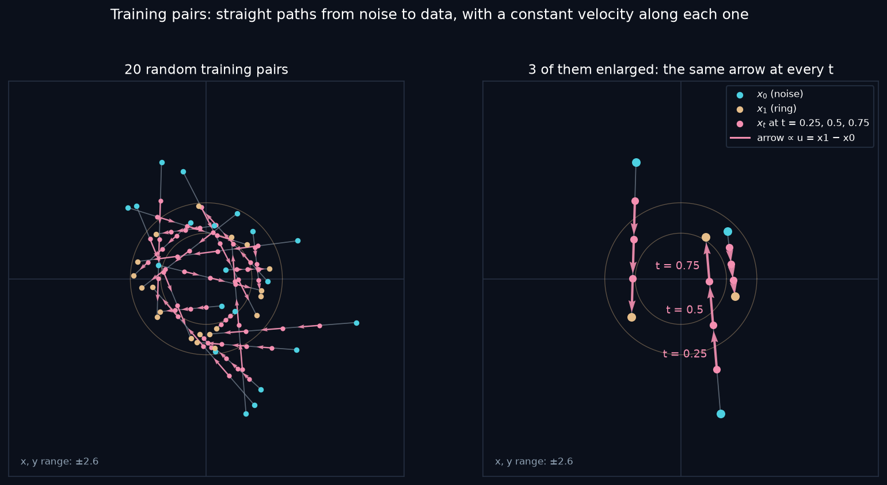
5 Part 1, Task 2: model and training
The model, the pair construction and the training loop are written in PyTorch with standard layers and the Adam optimizer (details in Section 2). The loss I minimize is the squared distance summed over the two coordinates and averaged over the batch, which is the assignment's loss. It is 2 times PyTorch's mean-squared-error loss, because that one also averages over the two coordinates, and the factor of 2 doesn't change what the model learns. The ring model trained for 20,000 steps in 20.0 s.
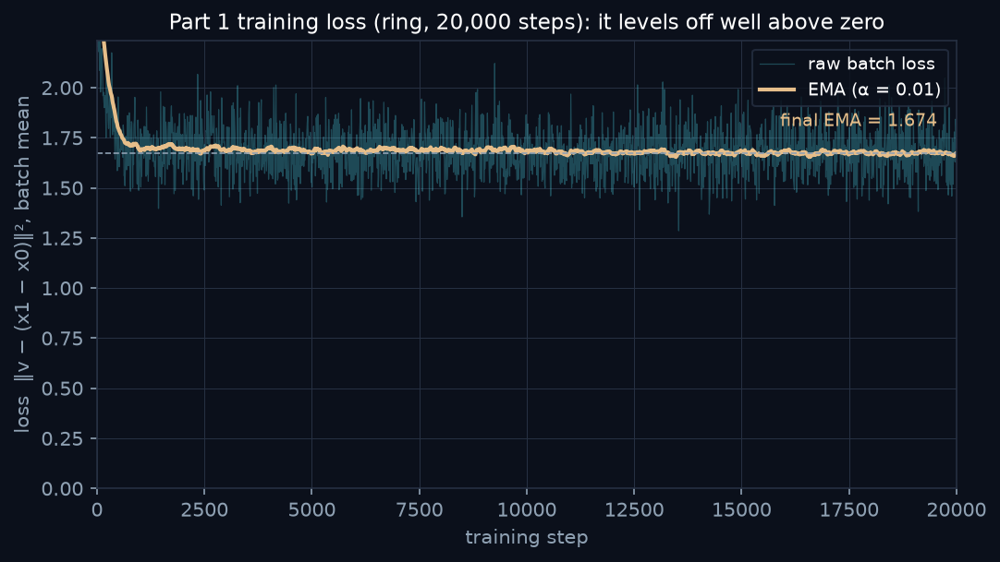
What the network predicts. It predicts a velocity, two numbers (vx, vy), for a given position and time. It never predicts where a point will end up. During training x1 is only used to build the target u, and at generation time the network gets nothing except the current point and t.
Why the loss doesn't go to zero. The same input (x, t) shows up in a lot of different training pairs. For example, a point at the origin at t = 0.5 could be halfway between a noise point on the left and a ring point on the right, or the other way around. Those two pairs want opposite velocities, but the network can only give one answer, so the best it can do is their average (the conditional mean from Section 3). Even a perfect network still pays for the spread of the training velocities around that average, so the loss has to level off above zero. The plateau measures how mixed up the random pairs are, not how good the model is, so I don't use the loss value as a quality score.
Figure 4 shows this directly. At each probe point I kept the training pairs whose xt landed within 0.05 of the probe and whose t was within 0.03 of the probe time. I had to draw a lot of fresh triples to get about 400 of them (1,800,000 for the first probe and 12,000,000 for the third).
- At (0, 0) and t = 0.5 the arrows point in every direction. Their average is almost zero (length 0.03), and the network is only 0.02 away from it. The spread around the average is 2.59, so training examples near this point add about that much to the loss no matter how good the network is.
- At (0.5, 0.3) and t = 0.7 most arrows point outward but still spread a lot (local variance 2.09). The average has length 0.39 and the network is 0.10 away from it.
- At (−1.0, 0.8) and t = 0.25 most pairs are heading in toward the near side of the ring. The fan is narrower (local variance 1.12), the average is long (1.39), and the network is 0.09 away from it.
In all three cases the network sits close to the average of the fan, not on any single training arrow. The final EMA loss of 1.674 is in the same range as these local variances, which makes sense, because the plateau is mostly this spread averaged over all the (x, t) that training visits.
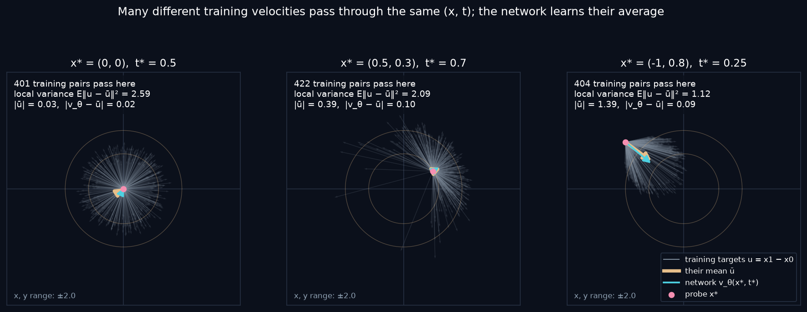
6 Part 1, Task 3: generating new points
Generation solves the ODE dz/dt = vθ(z, t) from t = 0 to 1 with forward Euler, starting from fresh Gaussian noise. I use N = 120 steps, the same as the instructor. My sampler only takes three inputs: the model, the starting noise and the number of steps. There is no input for target points, so it can't look at where the points should go.
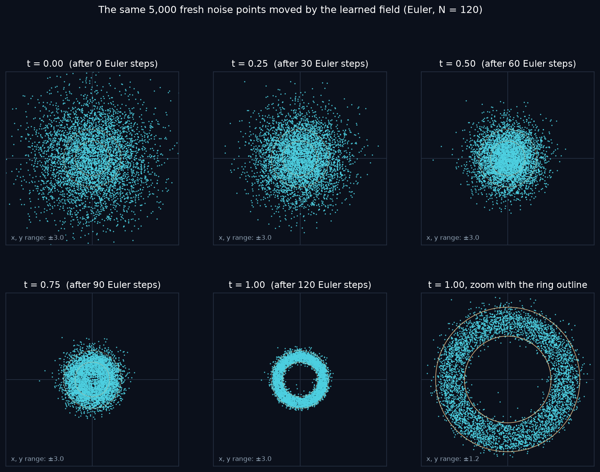
How the field changes over time. The velocity field is not fixed, it changes a lot with t. At t = 0 every arrow points toward the origin, and the speed grows with distance. This is actually what the theory says. At t = 0 the point xt is just the noise point, which says nothing about which ring point it will be paired with, so the best guess is the average target minus the current point, E[x1] − x = −x, because the ring is centered at the origin. On a 41×41 grid over ±2.5 the network's output at t = 0 is within 3.7% of −x on average. Later the arrows inside the hole point outward and the arrows outside the ring point inward, and the far-away speeds grow, because a point that is still far away late in time has to move fast to reach the ring by t = 1.
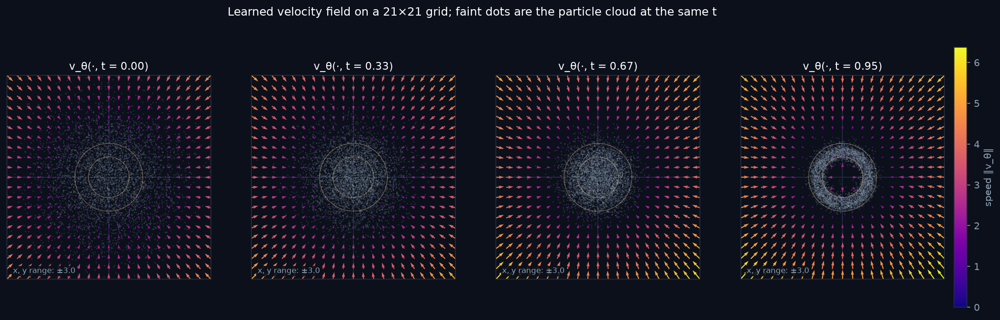
Learned trajectories are not the training paths. This is the main point of Task 3. The left panel of Figure 7 shows straight training segments from 30 noise points to random ring points. They cross each other a lot: 101 of the 435 possible pairs cross. The middle panel starts from the same 30 noise points but follows the learned field. Now the paths look rewired. Each particle goes to a nearby part of the ring instead of a random one, and only 1 of the 435 pairs cross. Where training lines cross, the network can't follow both, so it learns their average direction, and a particle that follows the average goes between them instead of through. The one crossing I counted doesn't break the no-crossing rule: the two particles pass that spot at t ≈ 0.95 and t ≈ 0.28, so they are never there at the same time. A 2D picture flattens time away. The same crossing is still there with 480 and 2,000 Euler steps, so it's not an Euler artifact.
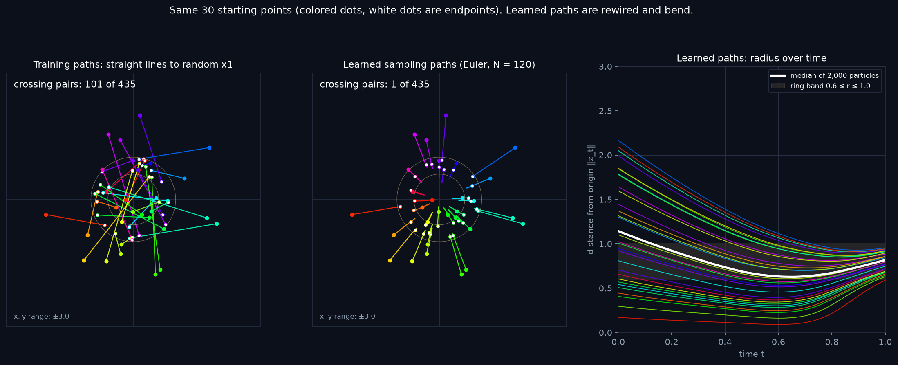
Straight training paths don't give straight sampling paths. For 2,000 fresh particles the mean path length is 0.826, but the mean straight-line distance from start to end (the chord) is only 0.518. So overall the paths are 1.60 times longer than straight lines, and the median ratio for a single particle is 1.83. For the training lines the ratio is exactly 1. The right panel of Figure 7 shows where the extra length comes from: 81.3% of particles first move inward and later move back out, and the median radius goes from 1.14 at t = 0 down to 0.63 at t = 0.65 and back up to 0.82 at t = 1. This matches the field: early on everything is pulled toward the center, and the hole only opens late.
How close the final ring is. To check the result at the distribution level I compare 10,000 generated points with 10,000 independent ring samples using the histogram total-variation distance (TV). Both clouds are counted on the same fixed 64×64 grid over ±1.5, plus one extra bin for anything outside the grid, and TV = ½ Σ|pi − qi|, where pi and qi are the shares of points in bin i. It's 0 for identical histograms and 1 when they don't overlap at all. Even two perfect samples don't score 0, because each has its own random noise, so I also compute this noise floor: the TV between two independent ring samples of the same size. The generated ring gets TV = 0.233 against a noise floor of 0.173. 93.8% of the points land inside the ring and 0% land outside ±1.5. The edges come out soft, which I think comes from the learned field and not from the number of steps. I test that properly in Part 2, Task 3.
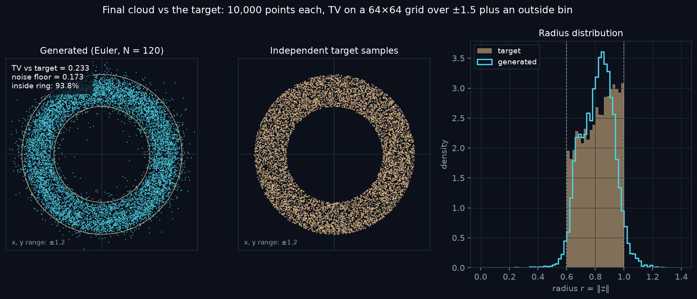
7 Part 2, Task 1: the torii target
For Part 2 I picked a torii gate (鳥居), the gate that stands at the entrance of a Shinto shrine. It is clearly different from the ring, and it's a much harder test for the model. It has thin straight bars, sharp corners and two small closed gaps between the beams, and a smooth network has trouble with all of those things. I built the shape myself out of five polygons, with y pointing up and every corner inside ±1.0: the kasagi (笠木, top beam), the gakuzuka (額束, short center post), the nuki (貫, lower tie beam) and two hashira (柱, pillars). The thinnest parts are 0.14 wide and the gap between the two beams is 0.24.
| Part | Vertices |
|---|---|
| kasagi 笠木 (top beam) | (−0.95, 0.74), (0.95, 0.74), (0.84, 0.58), (−0.84, 0.58) |
| gakuzuka 額束 (center post) | (−0.07, 0.58), (0.07, 0.58), (0.07, 0.34), (−0.07, 0.34) |
| nuki 貫 (tie beam) | (−0.76, 0.34), (0.76, 0.34), (0.76, 0.20), (−0.76, 0.20) |
| hashira 柱 (left pillar) | (−0.56, 0.58), (−0.42, 0.58), (−0.40, −0.86), (−0.60, −0.86) |
| hashira 柱 (right pillar) | (0.42, 0.58), (0.56, 0.58), (0.60, −0.86), (0.40, −0.86) |
Sampling rule. I use rejection sampling: I draw a point uniformly in the square [−1, 1]² and keep it only if it lands inside at least one of the five polygons, otherwise I throw it away and draw again. Because every proposal is uniform over the square, the points that survive are uniform over the area of the shape. Where two polygons overlap (the pillars and the nuki), a point is kept only once, so the overlap doesn't get double density. The share of proposals that get kept should equal the area divided by 4, and it does: 0.245 measured against 0.245.
Source and permissions. Original geometric design created for this project from five polygons; no external images, fonts, or logos were used, so no permissions are required.
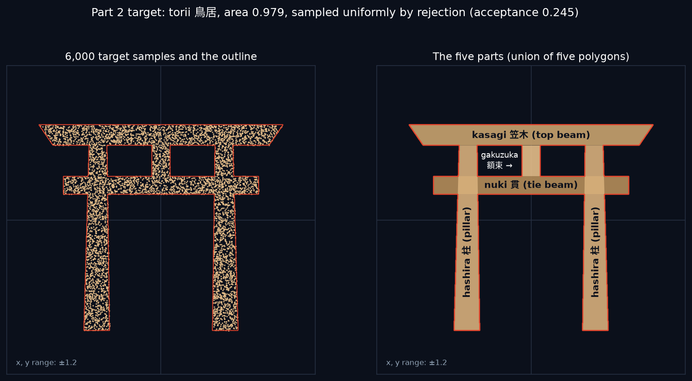
Training. I trained the same model as in Part 1 with the torii sampler as the target, once for 30,000 steps and once for 60,000. The loss behaves the same way as in Part 1: it drops in the first thousand steps and then stays flat, ending at an EMA of 1.376 and 1.360. The loss barely moved, but the distribution check shows that training longer did help. With N = 1000 Euler steps (so the solver error is negligible), TV went from 0.256 ± 0.006 to 0.233 ± 0.006 over 5 evaluation seeds, and the share of points inside the torii went from 80.9% to 84.2%. The gain of 0.023 is much bigger than the seed-to-seed spread (0.006), so I use the 60,000-step model for everything after this. It is still far from the noise floor of 0.130: the bars come out thicker and blurrier, the gaps between the beams are partly filled in, and the thin gakuzuka doesn't show up as its own bar.
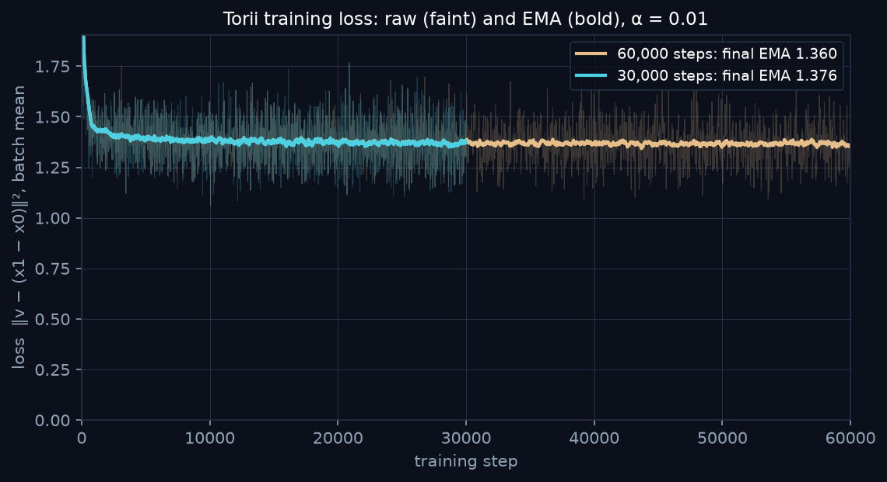
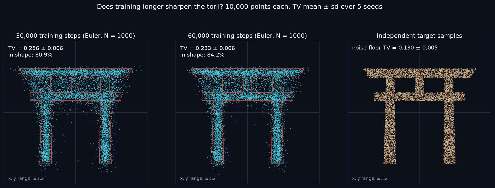
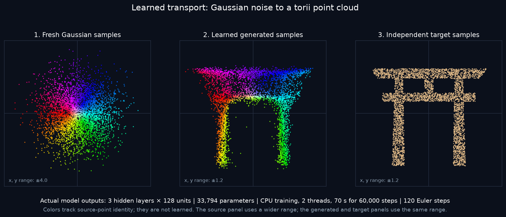
8 Part 2, Task 2: animating the learned transport
The animation follows the same 6,000 particles (seed 500) along their 120-step Euler trajectories. There are 120 motion frames at 30 frames per second and then a 1.5 s hold at t = 1. The display frames don't line up exactly with the Euler steps, so for a frame between two steps I linearly interpolate between the two neighboring numerical states, the same as the instructor's demo. No extra network calls move the particles. The left panel is the full view at ±3.0 with gray arrows for vθ(·, t) on a 15×15 grid, and the right panel zooms to ±1.2 with the torii outline in vermilion, the color torii are usually painted.
Direct links to the animation files: p2_transport.gif (11.0 MB, 1024×576) · p2_transport.mp4 (3.5 MB, 1280×720) · p2_ripple.gif (10.8 MB, optional extra).

Animation links (open in a browser): okdaniel.github.io/flow-matching-report/animations/p2_transport.gif, …/p2_transport.mp4 and …/p2_ripple.gif. The page itself is at okdaniel.github.io/flow-matching-report.


How the colors are assigned. Every particle gets one color from where it starts and keeps it for the whole animation. The color comes from the angle of the starting point, θ0 = atan2(y0, x0), turned into a hue = (θ0 + π) / 2π with full saturation, so going once around the origin goes once around the color wheel. Points that start on the left are red, at the bottom yellow-green, on the right cyan, and at the top blue and purple. Points that start close to the center (radius r0 < 0.5) are mixed toward white, up to 85% white at the very center, because otherwise the dense middle of the Gaussian, where all the hues meet, turns into a muddy rainbow.
Colors don't take part in training. The colors are only added by the plotting code. They are computed once from z0, they never go into the network and they are not part of the loss. The model only ever sees (x, y, t) and only outputs (vx, vy). So the colors don't change where any particle goes, they just let me follow each particle.
What the colors show. Particles that start next to each other end up next to each other, so each part of the torii is filled by one connected wedge of the color wheel instead of a random mix. The two upper 45° sectors (blue and purple) send 76% and 75% of their particles to the kasagi. The two lower-left sectors feed the left pillar (61% and 80%) and the two lower-right sectors feed the right pillar (77% and 62%). The whitish particles from the center mostly fill the middle: 74% land in the nuki. So the map roughly keeps the angle: the top of the noise goes to the top of the gate, the bottom goes to the pillars, left stays left and right stays right. To me this is the clearest evidence that the network learned one smooth transport and not some random assignment of particles to target points.
An extra: the ripple animation (purely visual). Inspired by the ripple idea in the Xiaohongshu video, I made a second GIF from the same model, the same particles and the same trajectory. Only the color rule changes: hue = frac(k r0 − ωt) with k = 2 and ω = 3, where r0 is the starting distance from the origin and frac keeps the part after the decimal point. So the noise is painted in concentric rings that ripple outward as t grows. This is renderer-only, exactly like the angle colors: it has no effect on training or on where any particle goes. The rings stay clean bands while the cloud shrinks and stretches, and they end up as nested arches around the middle of the nuki, which shows again that the map is continuous.
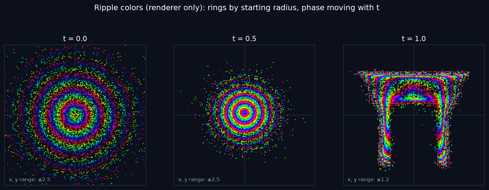
Play the ripple animation (GIF, 10.8 MB)
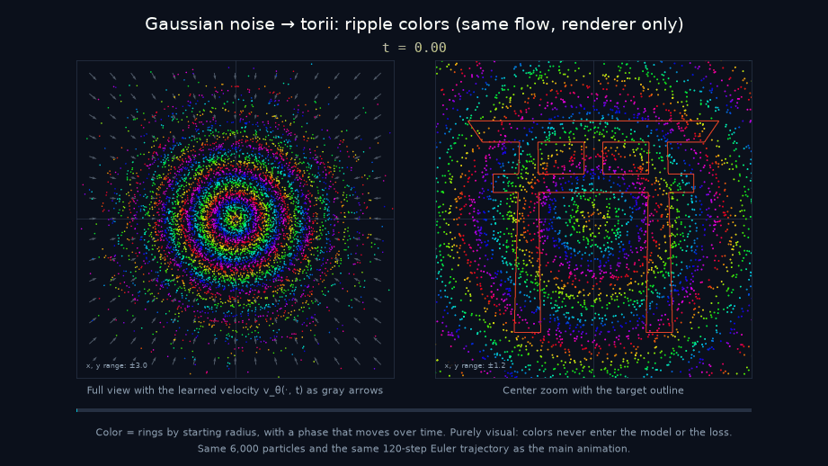
9 Part 2, Task 3: the sampling trade-off
Setup. I keep everything fixed except the number of Euler steps N. The weights are the 60,000-step model and don't change. The starting noise is fixed too: for each of 5 evaluation seeds (200 to 204) I draw one batch z0 of 10,000 points and reuse that exact batch for every N. So for a given seed, the cloud at N = 1 and the cloud at N = 1000 are made of the same particles, and the only thing that changes is how finely the path is cut into steps. I test N = 1, 2, 5, 10, 25, 50 and 120, plus N = 1000 as a high-accuracy reference. For every N I measure:
- Sampling time without rendering and without storing the trajectory: 2 threads, PyTorch's inference mode, one warm-up call, then the median and minimum of 7 timed runs.
- NFE, which is just N, and the time per NFE.
- TV against the target, on the same fixed 64×64 grid over ±1.5 plus one outside bin as in Part 1, compared with an independent target sample for each seed (seeds 300 to 304). I report the mean ± sd over the 5 seeds.
- The noise floor: TV between two independent target samples of the same size, 0.130 ± 0.005. This is what a perfect model would score.
- In-shape share (points inside the torii, the target has 100%) and outside share (points outside ±1.5, which land in the extra bin).
- Step error: TV between the cloud at N and the cloud at 1000, and the mean distance ‖zN − z1000‖ between where each particle ends up.
The last one needs a comment, because the assignment says not to use point-by-point distances between independently sampled clouds. Point 17 of one random cloud has nothing to do with point 17 of another, so their distance means nothing. Here it's different: both clouds start from the same z0 and follow the same field, so particle i with N steps and particle i with 1000 steps are the same particle, solved with two different step sizes. Their distance is exactly the error the solver adds. The comparison with the target is still done only with distributions. With these numbers I split the error in two. The step error is the part that goes away with more steps, and the model error is what stays at N = 1000, measured as TV(1000 vs target) minus the noise floor.
| N | NFE | median ms | min ms | ms / NFE | TV vs target (mean ± sd) | TV vs N = 1000 | mean displacement vs N = 1000 | in-shape % | outside ±1.5 % |
|---|---|---|---|---|---|---|---|---|---|
| 1 | 1 | 4.3 | 4.1 | 4.29 | 0.9910 ± 0.0008 | 0.9931 | 0.6451 | 2.3 | 0.00 |
| 2 | 2 | 8.1 | 8.0 | 4.06 | 0.8427 ± 0.0034 | 0.8312 | 0.3998 | 37.5 | 0.00 |
| 5 | 5 | 22.3 | 20.6 | 4.47 | 0.4693 ± 0.0071 | 0.4577 | 0.1472 | 66.0 | 0.00 |
| 10 | 10 | 43.0 | 40.6 | 4.30 | 0.3437 ± 0.0067 | 0.2772 | 0.0726 | 82.0 | 0.00 |
| 25 | 25 | 101.3 | 99.0 | 4.05 | 0.2550 ± 0.0044 | 0.1351 | 0.0279 | 84.1 | 0.00 |
| 50 | 50 | 211.1 | 209.0 | 4.22 | 0.2411 ± 0.0058 | 0.0890 | 0.0135 | 84.3 | 0.00 |
| 120 | 120 | 494.3 | 475.9 | 4.12 | 0.2364 ± 0.0057 | 0.0538 | 0.0052 | 84.2 | 0.00 |
| 1000 (ref.) | 1,000 | 4,118.1 | 4,049.7 | 4.12 | 0.2327 ± 0.0063 | 0 | 0 | 84.2 | 0.00 |
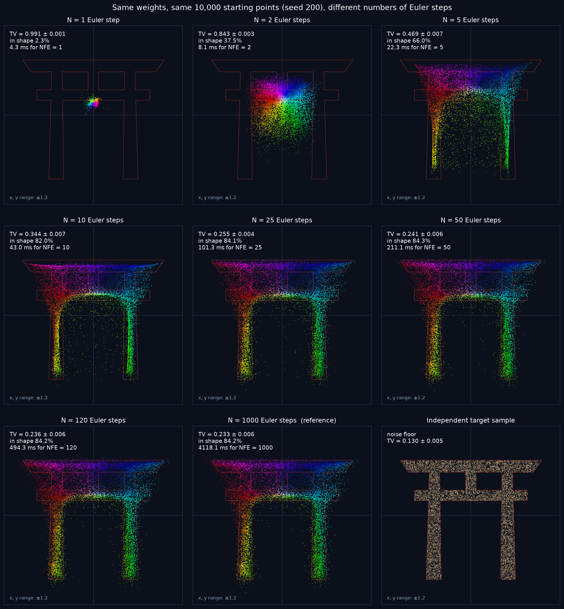
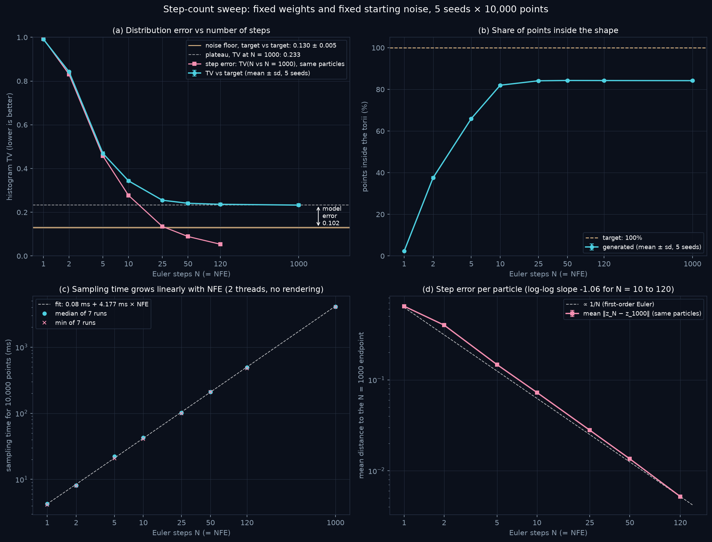
What changes with fewer steps. Figure 15 shows that fewer steps don't make the torii noisy. They make it shrink toward the middle and blur. With N = 1 every particle ends up in almost the same spot: the center of that cloud is at (0.004, 0.172), the mean of the target is at (−0.000, 0.161), and the cloud's rms spread is only 0.028, compared with 0.676 for the target. That spot is just under the nuki, so 97.7% of the points land in the empty area there and TV is 0.991, close to the worst possible value of 1. With N = 2 the points form one blurry blob and the kasagi gets 0.0% of them (the target has 28.9%). With N = 5 the gate is recognizable but too small and thin, with 17.7% of the points in the two gaps between the beams. By N = 10, 82.0% of the points are inside the shape, but there is still too much mass in the gaps (8.9%). Points far outside never happen: the share outside ±1.5 is 0.00% at every N, so the extra TV bin is never used here.
I think there is a simple reason few steps shrink the shape instead of throwing points everywhere. For straight paths the ideal velocity can be written as
which comes from the conditional velocity in Lipman et al. [1] (eqs. 20 and 21) and the conditional-mean identity [3]. Here E[x1 | xt = x] is the field's best guess of where a particle at x will end up, an average over all the target points that are still possible from x. At t = 0 the noise says nothing about the target, so the guess is the mean of the whole torii, and one Euler step of size 1 lands exactly on it. That is the N = 1 collapse. With more steps the last step jumps onto a guess made at t = 1 − 1/N, which still averages over nearby target points. An average of points from two bars lands between them, in a gap or under the nuki, and an average can never leave the convex hull of the torii (the smallest convex region around it), which fits the 0% outside ±1.5. This argument is for the ideal field, and my network only approximates it, but the measured numbers follow it closely.
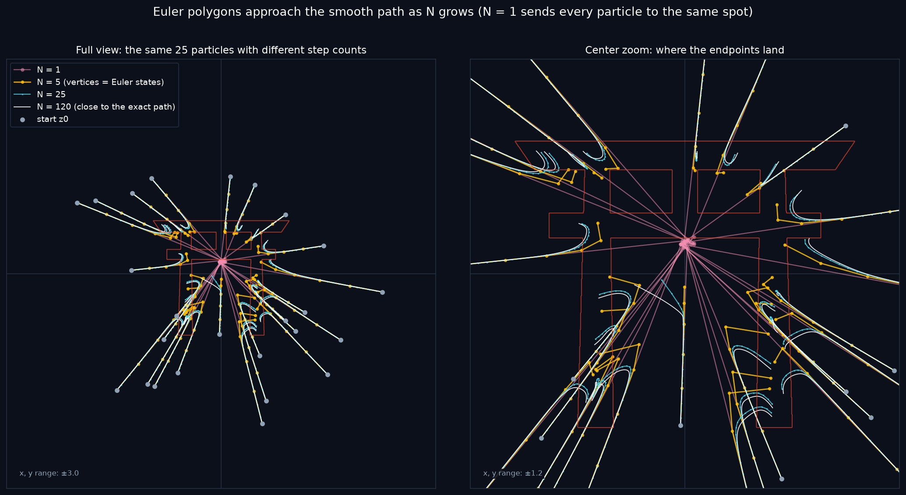
Where the curves flatten. TV against the target drops fast at first: 0.991, 0.843, 0.469 and 0.344 for N = 1, 2, 5 and 10. Then it flattens: 0.255 at 25, 0.241 at 50, 0.236 at 120 and 0.233 at 1000. To see where it really stops improving, I look at the paired difference TV(N) − TV(1000) for each seed, where most of the sampling noise cancels because both use the same noise and the same target sample. It is 0.111 ± 0.002 at N = 10, 0.022 ± 0.005 at 25, 0.008 ± 0.003 at 50 and 0.004 ± 0.002 at 120. So the curve flattens between N = 25 and 50, and after that the gain is about the size of the seed-to-seed spread. A second metric, the sliced Wasserstein distance, tells the same story (0.3900 at N = 1, 0.0438 at 10, 0.0096 at 120 and 0.0088 at 1000).
But the step error itself doesn't flatten. TV(N vs 1000) keeps falling (0.277, 0.135, 0.089 and 0.054 for N = 10, 25, 50, 120), and the mean displacement falls from 0.073 to 0.005, a log-log slope of −1.06. This is what Euler should do, because its error is proportional to the step size 1/N [3]. N = 1000 is accurate enough to be the reference: compared with N = 2000 the particles move only 0.00035 on average.
Time and NFE. Every Euler step is one network call, so NFE = N, and the sampling time follows NFE almost perfectly: 0.08 ms + 4.177 ms × NFE for 10,000 points (R² = 0.99975), with 4.05 to 4.47 ms per NFE for every N. This makes the trade-off easy to read. Going from N = 10 to 25 costs about 58 ms more and lowers TV by 0.089, while going from 120 to 1000 takes about 8.3 times longer and lowers TV by only 0.004.
What is left at N = 1000. Even with 1000 steps, TV is 0.233 ± 0.006 against a noise floor of 0.130 ± 0.005, so the model error is 0.102, and only 84.2% of the points land inside the torii. Figure 18 shows where. There is too little mass inside the bars, especially on the gakuzuka, and too much in the two gaps and in a thin band just outside the edges. Of the 15.8% of points outside the torii, 73% are less than 0.05 from an edge (median distance 0.025), so most of them form a soft halo around the bars. The thin gakuzuka is the worst part: it gets 1.7% of the points while the target has 3.4%.
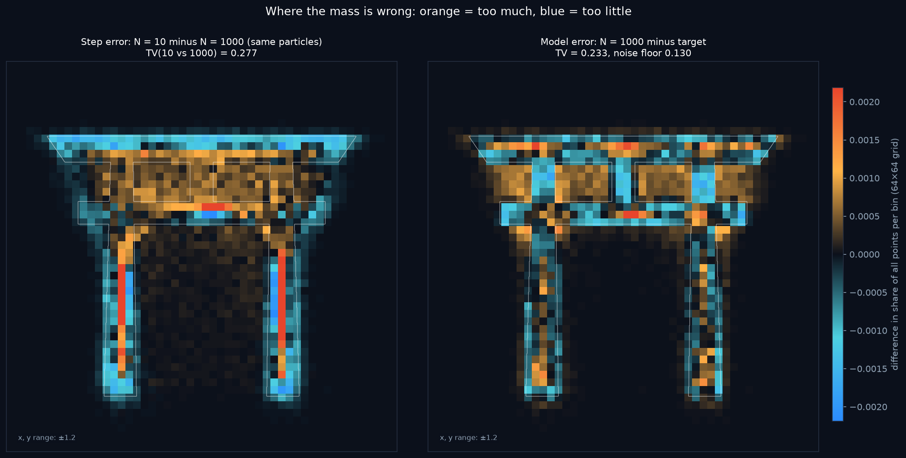
Solver error or model error? The assignment says "More sampling steps can reduce numerical error, but do not automatically fix an inaccurate learned field," and my numbers show exactly this. At N = 10 the step error and the model error are about the same size (0.111 against 0.102). At N = 120 the step error adds only 0.004 to TV, and the model error is about 28 times bigger. Because N = 1000 is so close to N = 2000, the 0.102 that's left is not a solver problem. It comes from the learned field.
Two checks tell me more about that error. First, it isn't bad luck with one training run. Retraining with seeds 1 and 2 gives TV at N = 1000 of 0.247 ± 0.006 and 0.245 ± 0.006, so over the three training seeds it's 0.242 ± 0.008, and the gakuzuka gets 1.7%, 1.4% and 1.4% of the points. Every seed makes the same kind of mistake. Second, it is partly a capacity problem. A 4×256 model with 198,914 parameters (the size used in the inspiration video), trained with the same settings, reaches TV 0.169 ± 0.006 at N = 1000. That is only 0.039 above the floor, so about 62% of the model error goes away with a bigger network, and 91.1% of its points land inside the torii. Its final training loss (1.353) is almost the same as my model's (1.360), which is one more sign that the loss value is not a quality measure. It costs more, though: 22.2 ms per NFE instead of 4.12 (5.4 times). Still, at N = 120 it takes 2,666 ms and reaches TV 0.174, which is both faster and better than my model at N = 1000 (4,118 ms, TV 0.233). The capacity model is only evidence; everything else on this page uses the 33,794-parameter model.
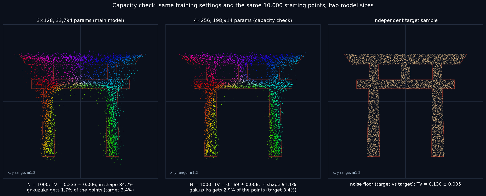
I think the part that is left even for the bigger model comes mostly from the target being hard to represent with a smooth field. The torii is a uniform density with hard edges, so to put every point exactly inside a bar the field has to change very sharply near the edges when t gets close to 1. A smooth network that takes t as a plain number can only approximate that, so the edges come out soft. The target samples themselves are not the problem, because I draw fresh exact samples from the polygons at every training step.
Bin size. The conclusions don't depend on the grid. With 32×32, 64×64 and 128×128 bins the noise floor changes a lot (0.069, 0.130 and 0.242), because smaller bins hold fewer points and have more sampling noise. But at every bin size N = 10 is clearly worse than N = 120 (0.274 vs 0.158, 0.344 vs 0.236, 0.451 vs 0.347), and N = 120 is within 0.005 of N = 1000.
Overall, the number of steps controls the solver error, and for this model it stops mattering at around N = 25 to 50. More steps after that still move the particles a little, but TV stays at about 0.23, which is 0.10 above the noise floor, because the learned field itself isn't accurate enough at the thin parts and the edges of the torii. A bigger network fixes about 62% of that, and more steps can't fix any of it.
10 Discussion and limitations
The main thing I learned is that the network learns an average. Because the training pairs are random, the loss can't go to zero, the learned paths are curved and don't cross, and the error that's left at the end comes from how well that average field is learned, not from the sampler once it has enough steps. There are some limits to keep in mind when reading my numbers.
- One target per part and one main seed. The step-count study is for the torii only. I checked training seeds 1 and 2 for robustness, and they moved TV at N = 1000 by much less than the model error, but other shapes could behave differently.
- Finite samples. Every TV value has sampling noise. That's why I report mean ± sd over 5 seeds and always show the noise floor, which depends on the sample size (10,000) and the grid.
- Bin choice. The value of TV depends on the bin size, so a TV only means something next to its floor. The conclusions stayed the same at 32, 64 and 128 bins.
- What histogram TV can't see. It ignores structure smaller than one bin (about 0.047 wide), and it doesn't care how far a point is from where it should be, only which bin it's in. TV values also don't simply add up, so "model error = TV − floor" is a rough measure.
- Timings are machine-dependent. They are for my laptop, plugged in, on 2 threads. On another computer the numbers will be different, but the straight-line relation between time and NFE should stay the same. To get stable timings I had to stop the C memory allocator from giving the large buffers back to the operating system after every call; this changed only the speed, not any result.
11 References
- Y. Lipman, R. T. Q. Chen, H. Ben-Hamu, M. Nickel, M. Le. Flow Matching for Generative Modeling. ICLR 2023. arXiv:2210.02747.
- X. Liu, C. Gong, Q. Liu. Flow Straight and Fast: Learning to Generate and Transfer Data with Rectified Flow. 2022. arXiv:2209.03003.
- Y. Lipman, M. Havasi, P. Holderrieth, N. Shaul, M. Le, B. Karrer, R. T. Q. Chen, D. Lopez-Paz, H. Ben-Hamu, I. Gat. Flow Matching Guide and Code. 2024. arXiv:2412.06264.
- The course instructor's demo video on the Project 2 page, and the linked Xiaohongshu inspiration video "flow matching: straightening the generation path" (visual inspiration only; no footage, logos or music were used).
12 Use of generative AI
I used generative AI tools (Claude and Claude Code, and Gemini for summarizing the reference videos) for planning, coding assistance and drafting. I reviewed, ran and understood all of the code and all of the results, as the course policy asks.
A Traceability matrix
Where each requirement of the assignment is answered. Notebook sections refer to the submitted part_1.ipynb and part_2.ipynb.
Show the requirement → evidence table
| Assignment requirement | Notebook | Figure / number | Section |
|---|---|---|---|
| P1 T1: Gaussian source; simple target; sampling rule and coordinate scale | part_1, Task 1 | Fig. 1 | 4 |
| P1 T1: random pairs, uniform t, xt and u | part_1, Task 1 | Fig. 2 | 4 |
| P1 T1: visualize paths; explain constant velocity | part_1, Task 1 | Fig. 2 + derivation | 4 |
| P1 T2: MLP, pair construction, training loop in PyTorch | utils.py, part_1, Task 2 | 33,794 parameters | 2, 5 |
| P1 T2: plot the loss; what is predicted; why it doesn't go to 0 | part_1, Task 2 | Figs. 3, 4; local variances | 5 |
| P1 T3: Euler from fresh noise, no endpoints given | part_1, Task 3 | sampler inputs (model, noise, N) | 6 |
| P1 T3: point cloud at several times | part_1, Task 3 | Fig. 5 | 6 |
| P1 T3: velocity field at selected times | part_1, Task 3 | Fig. 6 | 6 |
| P1 T3: learned trajectories vs straight training paths | part_1, Task 3 | Fig. 7; crossings 1 vs 101; length/chord 1.60 | 6 |
| P2 T1: target different from Part 1; how points are sampled; source and permissions | part_2, Task 1 | Fig. 9, Table 4, provenance note | 7 |
| P2 T2: same particles animated from noise to shape | part_2, Task 2 | p2_transport.gif / .mp4 | 8 |
| P2 T2: color scheme; how colors are assigned; no role in training | part_2, Task 2 | color rule + text, Fig. 14 (extra) | 8 |
| P2 T2: animation or working link, plus still frames | report | GIF/MP4 direct links (Video 1 on the web page), Fig. 13 stills | 8 |
| P2 T3: fixed weights and noise; N = 1, 5, 10, 25, 50 (+2, 120, 1000) | part_2, Task 3 | Fig. 15, Table 5 | 9 |
| P2 T3: sampling time without rendering; NFE | part_2, Task 3 | Table 5, Fig. 16c | 9 |
| P2 T3: distribution-level check, same grid, outside points counted | part_2, Task 3 | TV + noise floor, Fig. 16a, bin check | 9 |
| P2 T3: what changes with fewer steps vs model/target errors | part_2, Task 3 | step vs model error, Figs. 17–19 | 9 |
| Record device, versions, architecture, settings, seeds, runtime | run_info.json | Tables 1–3 | 2 |
| Code commented and runnable, README.txt | code/ (Blackboard only) | README.txt | not public |
| report/page.pdf and site_info.txt; public repo with no code | report/ (Blackboard) | this page, leak check | not public |